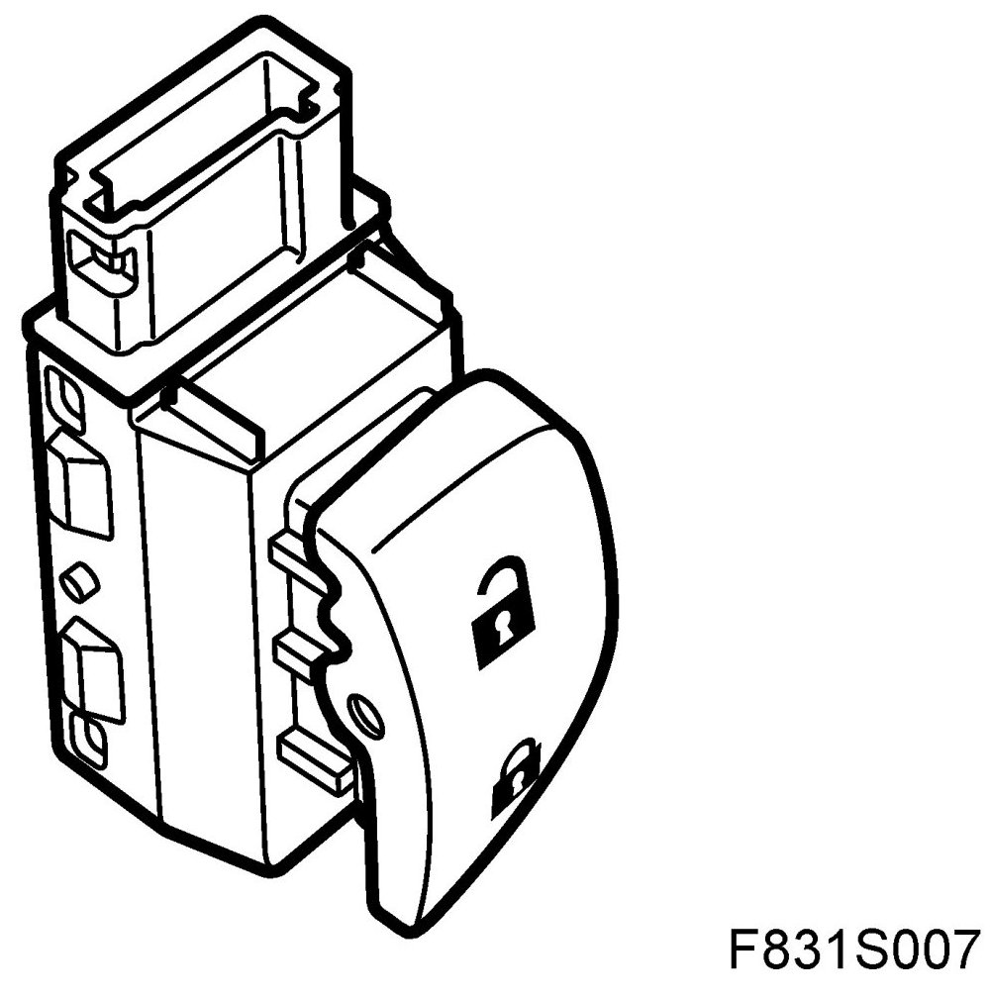
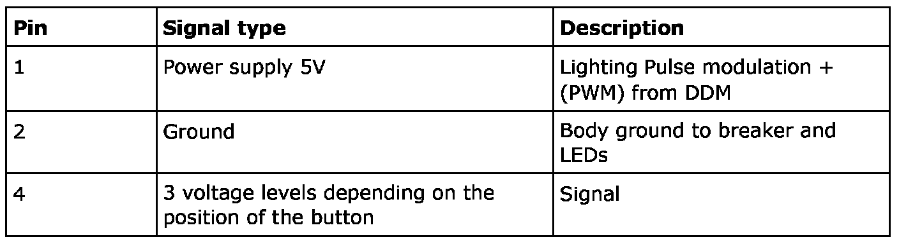
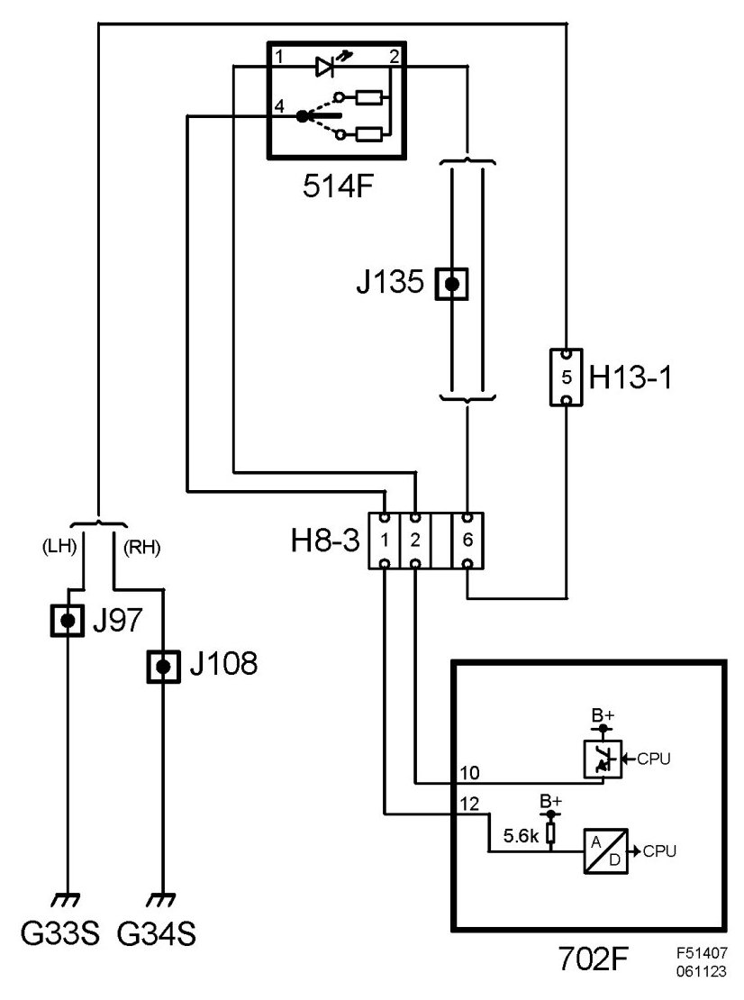

Power Door Lock Switch: Description and Operation
Switch, Simultaneous Closing, Central Locking System, Door, Front (514FL/FR)
Location
Switch, simultaneous closing, central locking system, door, front, left (514FL)
Switch, simultaneous closing, central locking system, door, front, right (514FR)
Main task
Used to operate the central lock from inside the car.
Type

The button has 3 positions: unactuated centre position as well as locked and unlocked. The button is non-locking to the centre position. In the button there is a 2-pole breaker and 2 resistors with different values. In the centre position the circuit is open, in the locked position the resistance is 600 ohm and in the unlocked position it is 1.4 kohm. For background lighting there are 2 LEDs with a series connected resistor.
Connect

The button has a direct chassis grounding and is fed with 5V via a resistance of 5.6kohm in the door control module. This means that the voltage measured across the pins will be dependent of whether the button is in the locked or unlocked position.
The voltage value is A/D converted and is then available in digital form. The digital value is then converted to the identity for the button's position and is paced in the control module's primary memory. The value is sent out on the bus and is used by BCM.
The LEDs are fed with PWM+ from the door control module and use the same ground as the breaker.
